CODING AGENTS AS PIXEL WORLD MODELS
traex/DeepSeek-V4.1-Flash · phygen_120
点击播放 · 原生 RGB 像素
逐轮保存的候选
回放视频、检查图与代码变化。
每份候选均可单独播放。实际图片检查记录在下方工具轨迹中。
候选 01播放与检查图
点击播放 · 原生 RGB 像素
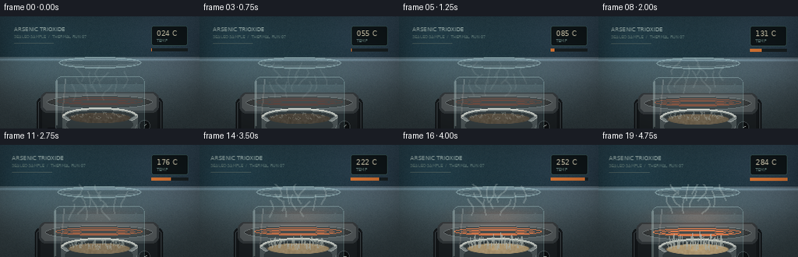
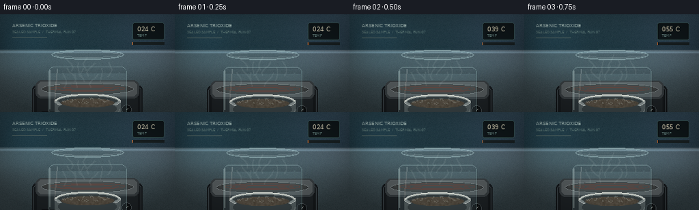
展开代码变化
--- 上一保存版本
+++ 本次保存版本
@@ -0,0 +1,306 @@
+from pathlib import Path
+
+import numpy as np
+from PIL import Image, ImageDraw, ImageFilter, ImageFont
+from scipy.ndimage import gaussian_filter
+
+import artifact_io
+
+
+ROOT = Path(__file__).resolve().parent
+W, H, N, FPS = 256, 144, 20, 4
+
+
+def font(size):
+ return ImageFont.truetype("/usr/share/fonts/truetype/dejavu/DejaVuSans.ttf", size)
+
+
+def rounded_mask(size, radius):
+ mask = Image.new("L", size, 0)
+ ImageDraw.Draw(mask).rounded_rectangle((0, 0, size[0] - 1, size[1] - 1), radius=radius, fill=255)
+ return np.asarray(mask, dtype=np.float32) / 255.0
+
+
+def polygon_mask(size, points):
+ mask = Image.new("L", size, 0)
+ ImageDraw.Draw(mask).polygon(points, fill=255)
+ return np.asarray(mask, dtype=np.float32) / 255.0
+
+
+def paste_rgba(base, layer, x, y):
+ sx, sy = layer.size
+ h, w = base.shape[:2]
+ x0, y0 = max(0, x), max(0, y)
+ x1, y1 = min(w, x + sx), min(h, y + sy)
+ if x1 <= x0 or y1 <= y0:
+ return
+ crop = np.asarray(layer)[y0 - y:y1 - y, x0 - x:x1 - x].astype(np.float32) / 255.0
+ alpha = crop[:, :, 3:4]
+ base[y0:y1, x0:x1] = base[y0:y1, x0:x1] * (1 - alpha) + crop[:, :, :3] * 255 * alpha
+
+
+def soft_glow(size, radius, color, strength):
+ arr = np.zeros((size[1], size[0], 3), dtype=np.float32)
+ arr[:] = color
+ glow = gaussian_filter(arr, sigma=(radius, radius, 0))
+ return glow * strength
+
+
+def make_background():
+ yy, xx = np.mgrid[0:H, 0:W].astype(np.float32)
+ # A cool, softly illuminated laboratory bench, with a dark instrument panel behind it.
+ base = np.zeros((H, W, 3), dtype=np.float32)
+ horizon = 52
+ wall = np.stack(
+ (
+ 19 + 9 * (1 - yy / horizon),
+ 28 + 11 * (1 - yy / horizon),
+ 34 + 12 * (1 - yy / horizon),
+ ),
+ axis=2,
+ )
+ base[:horizon] = wall[:horizon]
+ bench_t = np.clip((yy - horizon) / (H - horizon), 0, 1)
+ base[horizon:] = np.stack(
+ (
+ 42 + 22 * (1 - bench_t[horizon:]),
+ 47 + 23 * (1 - bench_t[horizon:]),
+ 50 + 24 * (1 - bench_t[horizon:]),
+ ),
+ axis=2,
+ )
+
+ rng = np.random.default_rng(7)
+ grain = rng.normal(0, 2.1, (H, W, 1)).astype(np.float32)
+ base += grain
+
+ # Bench edge and a soft reflection.
+ edge = np.exp(-((yy - 55.0) / 1.5) ** 2)
+ base += edge[:, :, None] * np.array([35, 43, 48], dtype=np.float32)
+ reflection = np.exp(-((yy - 72.0) / 18.0) ** 2)[:, :, None]
+ base += reflection * np.array([4, 7, 8], dtype=np.float32)
+
+ # Faint side lights on the background.
+ for cx, cy, r, col in [(34, 30, 35, (8, 20, 25)), (224, 20, 42, (16, 18, 25)), (130, 35, 70, (5, 12, 14))]:
+ fall = np.exp(-(((xx - cx) ** 2 + (yy - cy) ** 2) / (2 * r * r)))[:, :, None]
+ base += fall * np.asarray(col, dtype=np.float32)
+
+ return np.clip(base, 0, 255)
+
+
+def make_hotplate(t):
+ layer = Image.new("RGBA", (176, 105), (0, 0, 0, 0))
+ d = ImageDraw.Draw(layer)
+
+ # Housing: dark graphite ceramic with a narrow brushed metal edge.
+ d.rounded_rectangle((7, 43, 168, 101), radius=7, fill=(20, 24, 27, 255))
+ d.rounded_rectangle((9, 45, 166, 99), radius=6, outline=(64, 72, 76, 255), width=1)
+ d.rounded_rectangle((14, 53, 161, 94), radius=4, fill=(28, 33, 36, 255))
+
+ # Indicator strip and two physical controls.
+ d.rounded_rectangle((19, 82, 72, 87), radius=2, fill=(12, 15, 17, 255))
+ heat = min(1.0, max(0.0, (t - 0.18) / 0.72))
+ indicator = (int(80 + 175 * heat), int(28 + 65 * heat), int(22 + 25 * heat), 255)
+ d.rounded_rectangle((21, 83, 21 + int(44 * heat), 86), radius=1, fill=indicator)
+ for cx, r in ((123, 7), (145, 7)):
+ d.ellipse((cx - r, 79 - r, cx + r, 79 + r), fill=(12, 15, 17, 255), outline=(70, 78, 81, 255))
+ angle = -0.8 + 0.9 * heat
+ x2 = cx + int(4 * np.cos(angle))
+ y2 = 79 + int(4 * np.sin(angle))
+ d.line((cx, 79, x2, y2), fill=(175, 180, 176, 255), width=1)
+
+ # Top plate.
+ d.rounded_rectangle((12, 36, 163, 62), radius=8, fill=(53, 59, 62, 255))
+ d.rounded_rectangle((15, 38, 160, 59), radius=6, fill=(83, 89, 91, 255))
+ d.ellipse((20, 40, 155, 57), fill=(47, 51, 53, 255), outline=(112, 119, 120, 255))
+ d.ellipse((23, 41, 152, 55), fill=(57, 60, 60, 255))
+ # Concentric heating rings.
+ ring_color = (
+ int(85 + 155 * heat),
+ int(52 + 65 * heat),
+ int(45 + 15 * heat),
+ 255,
+ )
+ for inset in (8, 17, 27):
+ d.ellipse((25 + inset, 42 + inset * 0.18, 150 - inset, 54 - inset * 0.14), outline=ring_color, width=1)
+
+ # Rubber feet.
+ for x in (22, 148):
+ d.rounded_rectangle((x, 98, x + 13, 102), radius=2, fill=(8, 10, 11, 255))
+
+ return layer
+
+
+def make_crucible(t):
+ layer = Image.new("RGBA", (104, 74), (0, 0, 0, 0))
+ d = ImageDraw.Draw(layer)
+
+ # A shallow quartz/ceramic crucible.
+ d.ellipse((4, 40, 100, 72), fill=(74, 79, 80, 255))
+ d.rectangle((4, 43, 100, 65), fill=(75, 80, 81, 255))
+ d.ellipse((4, 34, 100, 55), fill=(135, 141, 140, 255), outline=(196, 198, 193, 255), width=1)
+ d.ellipse((8, 37, 96, 51), fill=(38, 42, 43, 255), outline=(90, 97, 97, 255))
+ # Rim highlights.
+ d.arc((5, 34, 99, 55), 180, 355, fill=(227, 226, 215, 255), width=2)
+ d.arc((5, 39, 99, 71), 3, 164, fill=(122, 128, 128, 255), width=1)
+ d.ellipse((9, 44, 94, 67), fill=(42, 47, 48, 255))
+
+ # Material inside the dish.
+ d.ellipse((12, 41, 91, 52), fill=(49, 47, 45, 255))
+ return layer
+
+
+def make_sublimate(t):
+ # Needle-like crystals grow from the upper surface of the dish and become translucent.
+ layer = Image.new("RGBA", (104, 74), (0, 0, 0, 0))
+ d = ImageDraw.Draw(layer)
+ rng = np.random.default_rng(19)
+ for i in range(50):
+ x = 17 + (i * 37) % 68 + rng.normal(0, 1.5)
+ base_y = 45 + 3 * np.sin(i * 1.7) + rng.uniform(-1.2, 1.2)
+ max_h = 3 + 12 * np.clip(t * 1.3 - 0.25, 0, 1) * (0.4 + 0.6 * ((i * 13) % 17) / 16)
+ h = max_h * (0.35 + 0.65 * np.clip((t - 0.2) / 0.65, 0, 1))
+ lean = rng.uniform(-2.0, 2.0)
+ alpha = int(70 + 120 * np.clip((t - 0.25) / 0.65, 0, 1))
+ col = (198, 199, 187, alpha)
+ d.line((x, base_y, x + lean, base_y - h), fill=col, width=1)
+ if i % 9 == 0:
+ d.line((x, base_y - h * 0.6, x + lean * 1.5 + 2, base_y - h * 0.8), fill=(222, 216, 197, alpha), width=1)
+ return layer
+
+
+def make_glass(t):
+ # A low laboratory beaker over the crucible; it makes the material change readable.
+ layer = Image.new("RGBA", (130, 105), (0, 0, 0, 0))
+ d = ImageDraw.Draw(layer)
+ glass = (150, 191, 200, 37)
+ d.rounded_rectangle((8, 5, 122, 100), radius=8, fill=glass)
+ d.rectangle((8, 5, 122, 36), fill=(0, 0, 0, 0))
+ # Translucent sidewalls and bottom, with a brighter lip.
+ d.rounded_rectangle((8, 27, 122, 101), radius=8, outline=(183, 218, 218, 90), width=1)
+ d.line((9, 32, 9, 89), fill=(209, 232, 231, 95), width=2)
+ d.line((121, 32, 121, 89), fill=(94, 137, 145, 55), width=1)
+ d.arc((8, 84, 122, 101), 5, 175, fill=(188, 218, 218, 74), width=2)
+ d.ellipse((12, 2, 118, 16), outline=(187, 220, 222, 105), width=2)
+ d.ellipse((17, 5, 113, 13), outline=(217, 235, 232, 46), width=1)
+ # Highlights are deliberately off-center.
+ d.line((20, 30, 16, 79), fill=(229, 241, 238, 53), width=2)
+ d.line((111, 35, 113, 74), fill=(172, 215, 218, 30), width=2)
+ return layer
+
+
+def material_pixels(t):
+ """Animated powder/crystal surface inside the crucible, in dish-local coordinates."""
+ yy, xx = np.mgrid[0:74, 0:104].astype(np.float32)
+ e = ((xx - 52) / 40.0) ** 2 + ((yy - 47) / 7.0) ** 2
+ inside = np.clip((1.0 - e) * 8.0, 0, 1)
+ inside *= (yy > 40) & (yy < 55)
+ heat = np.clip((t - 0.18) / 0.72, 0, 1)
+ # Dark orange-brown at room temperature, pale warm crystalline at the end.
+ color0 = np.array([73, 57, 42], dtype=np.float32)
+ color1 = np.array([211, 173, 119], dtype=np.float32)
+ col = color0 * (1 - heat) + color1 * heat
+ # Granular texture and little glints.
+ rng = np.random.default_rng(30)
+ texture = gaussian_filter(rng.normal(0, 1, (74, 104)), 0.8)
+ col = col[None, None, :] + texture[:, :, None] * 14
+ shimmer = np.exp(-(((xx - (31 + 20 * t)) / 8) ** 2 + ((yy - 47) / 2.2) ** 2))
+ col += shimmer[:, :, None] * np.array([25, 17, 8]) * heat
+ return col, inside
+
+
+def make_steam(t):
+ layer = Image.new("RGBA", (120, 85), (0, 0, 0, 0))
+ d = ImageDraw.Draw(layer)
+ phase = t * 8.0
+ for i in range(11):
+ x = 26 + (i * 11) % 70
+ y = 58 - (i % 4) * 8 - 22 * t
+ amp = 4 + 3 * np.sin(i * 2.1)
+ pts = []
+ for j in range(5):
+ pts.append((x + amp * np.sin(j * 0.9 + phase + i), y - j * 5))
+ alpha = int(20 + 38 * np.clip((t - 0.3) / 0.6, 0, 1))
+ d.line(pts, fill=(221, 235, 229, alpha), width=2, joint="curve")
+ return layer
+
+
+def draw_frame(t):
+ base = make_background()
+ frame = base.copy()
+
+ # Backlight bloom and the hotplate.
+ glow = soft_glow((W, H), 18, np.array([20, 50, 54], dtype=np.float32), 0.22)
+ frame += glow
+ hotplate = make_hotplate(t)
+ paste_rgba(frame, hotplate, 40, 61)
+
+ # Heat plume between the plate and vessel.
+ heat = np.clip((t - 0.2) / 0.7, 0, 1)
+ yy, xx = np.mgrid[0:H, 0:W].astype(np.float32)
+ plume = np.exp(-(((xx - 128) / 46) ** 2 + ((yy - 91) / 12) ** 2))
+ frame += plume[:, :, None] * np.array([44, 15, 4], dtype=np.float32) * heat
+
+ # Vessel and its contents are rendered in layers for a clean glass silhouette.
+ dish = make_crucible(t)
+ paste_rgba(frame, dish, 76, 83)
+ mcol, mmask = material_pixels(t)
+ # Composite the material only over the dark inner bowl.
+ sx, sy = 104, 74
+ x0, y0 = 76, 83
+ sy = min(sy, H - y0)
+ alpha = mmask[:sy, :, None]
+ region = frame[y0:y0 + sy, x0:x0 + sx]
+ frame[y0:y0 + sy, x0:x0 + sx] = region * (1 - alpha) + mcol[:sy] * alpha
+
+ crystals = make_sublimate(t)
+ paste_rgba(frame, crystals, 76, 83)
+ steam = make_steam(t)
+ paste_rgba(frame, steam, 68, 49)
+ glass = make_glass(t)
+ paste_rgba(frame, glass, 63, 50)
+
+ # Small white laboratory label and temperature readout; the UI-like markings
+ # are restrained so the transformation remains the focus.
+ img = Image.fromarray(np.clip(frame, 0, 255).astype(np.uint8), "RGB")
+ d = ImageDraw.Draw(img)
+ d.text((18, 12), "ARSENIC TRIOXIDE", font=font(7), fill=(170, 194, 190))
+ d.text((18, 23), "SEALED SAMPLE / THERMAL RUN 07", font=font(5), fill=(91, 120, 119))
+ d.line((18, 34, 68, 34), fill=(74, 96, 97), width=1)
+
+ temp = 24 + int(260 * np.clip((t - 0.05) / 0.9, 0, 1))
+ d.rounded_rectangle((194, 12, 240, 37), radius=3, fill=(14, 22, 25), outline=(53, 82, 83))
+ d.text((201, 16), f"{temp:03d} C", font=font(9), fill=(226, 219, 190))
+ d.text((201, 28), "TEMP", font=font(5), fill=(97, 126, 123))
+ # Tiny heat bar.
+ d.rectangle((194, 41, 240, 44), fill=(23, 31, 33))
+ d.rectangle((194, 41, 194 + int(46 * heat), 44), fill=(220, 119, 52))
+
+ # Very subtle camera drift: crop then resize, preserving the frame dimensions.
+ zoom = 1.0 + 0.025 * t
+ cw, ch = int(W / zoom), int(H / zoom)
+ cx = int((W - cw) / 2 + 2 * np.sin(t * 1.5))
+ cy = int((H - ch) / 2 - 2 * t)
+ img = img.crop((cx, cy, cx + cw, cy + ch)).resize((W, H), Image.Resampling.LANCZOS)
+
+ arr = np.asarray(img).astype(np.float32)
+ # Gentle vignette and film-like softness.
+ yy, xx = np.mgrid[0:H, 0:W].astype(np.float32)
+ vignette = 1.0 - 0.20 * (((xx - W / 2) / (W / 2)) ** 2 + ((yy - H / 2) / (H / 2)) ** 2)
+ arr *= np.clip(vignette, 0.74, 1.0)[:, :, None]
+ arr = np.clip(arr + 1.5, 0, 255)
+ return arr.astype(np.uint8)
+
+
+def main():
+ frames = []
+ for i in range(N):
+ t = i / (N - 1)
+ frames.append(draw_frame(t))
+ frames = np.stack(frames)
+ artifact_io.save(frames, ROOT)
+ print(f"saved {len(frames)} frames to {ROOT}")
+
+
+if __name__ == "__main__":
+ main()
候选 02播放与检查图
点击播放 · 原生 RGB 像素

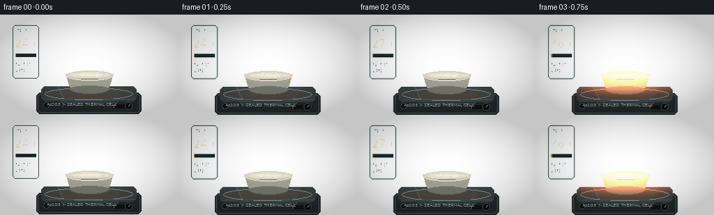
展开代码变化
--- 上一保存版本
+++ 本次保存版本
@@ -9,295 +9,269 @@
ROOT = Path(__file__).resolve().parent
W, H, N, FPS = 256, 144, 20, 4
+FONT = "/usr/share/fonts/truetype/dejavu/DejaVuSans.ttf"
def font(size):
- return ImageFont.truetype("/usr/share/fonts/truetype/dejavu/DejaVuSans.ttf", size)
-
-
-def rounded_mask(size, radius):
+ return ImageFont.truetype(FONT, size)
+
+
+def ease(t):
+ return t * t * (3.0 - 2.0 * t)
+
+
+def composite(base, layer, x, y):
+ rgba = np.asarray(layer, dtype=np.float32) / 255.0
+ h, w = rgba.shape[:2]
+ x0, y0 = max(0, x), max(0, y)
+ x1, y1 = min(base.shape[1], x + w), min(base.shape[0], y + h)
+ if x0 >= x1 or y0 >= y1:
+ return
+ part = rgba[y0 - y:y1 - y, x0 - x:x1 - x]
+ a = part[:, :, 3:4]
+ base[y0:y1, x0:x1] = base[y0:y1, x0:x1] * (1 - a) + part[:, :, :3] * a
+
+
+def ellipse_mask(size, box, feather=2):
mask = Image.new("L", size, 0)
- ImageDraw.Draw(mask).rounded_rectangle((0, 0, size[0] - 1, size[1] - 1), radius=radius, fill=255)
+ ImageDraw.Draw(mask).ellipse(box, fill=255)
+ mask = mask.filter(ImageFilter.GaussianBlur(feather))
return np.asarray(mask, dtype=np.float32) / 255.0
-
-
-def polygon_mask(size, points):
- mask = Image.new("L", size, 0)
- ImageDraw.Draw(mask).polygon(points, fill=255)
- return np.asarray(mask, dtype=np.float32) / 255.0
-
-
-def paste_rgba(base, layer, x, y):
- sx, sy = layer.size
- h, w = base.shape[:2]
- x0, y0 = max(0, x), max(0, y)
- x1, y1 = min(w, x + sx), min(h, y + sy)
- if x1 <= x0 or y1 <= y0:
- return
- crop = np.asarray(layer)[y0 - y:y1 - y, x0 - x:x1 - x].astype(np.float32) / 255.0
- alpha = crop[:, :, 3:4]
- base[y0:y1, x0:x1] = base[y0:y1, x0:x1] * (1 - alpha) + crop[:, :, :3] * 255 * alpha
-
-
-def soft_glow(size, radius, color, strength):
- arr = np.zeros((size[1], size[0], 3), dtype=np.float32)
- arr[:] = color
- glow = gaussian_filter(arr, sigma=(radius, radius, 0))
- return glow * strength
def make_background():
yy, xx = np.mgrid[0:H, 0:W].astype(np.float32)
- # A cool, softly illuminated laboratory bench, with a dark instrument panel behind it.
- base = np.zeros((H, W, 3), dtype=np.float32)
- horizon = 52
+ rng = np.random.default_rng(82)
+
+ # Soft blue-gray lab wall and a lighter countertop.
wall = np.stack(
(
- 19 + 9 * (1 - yy / horizon),
- 28 + 11 * (1 - yy / horizon),
- 34 + 12 * (1 - yy / horizon),
+ 29 + 13 * (1 - yy / 118),
+ 43 + 18 * (1 - yy / 118),
+ 51 + 18 * (1 - yy / 118),
),
axis=2,
)
- base[:horizon] = wall[:horizon]
- bench_t = np.clip((yy - horizon) / (H - horizon), 0, 1)
- base[horizon:] = np.stack(
+ base = wall.copy()
+ bench_y = 117
+ b = np.clip((yy - bench_y) / (H - bench_y), 0, 1)
+ bench = np.stack(
(
- 42 + 22 * (1 - bench_t[horizon:]),
- 47 + 23 * (1 - bench_t[horizon:]),
- 50 + 24 * (1 - bench_t[horizon:]),
+ 49 + 18 * (1 - b),
+ 55 + 19 * (1 - b),
+ 57 + 20 * (1 - b),
),
axis=2,
)
-
- rng = np.random.default_rng(7)
- grain = rng.normal(0, 2.1, (H, W, 1)).astype(np.float32)
- base += grain
-
- # Bench edge and a soft reflection.
- edge = np.exp(-((yy - 55.0) / 1.5) ** 2)
- base += edge[:, :, None] * np.array([35, 43, 48], dtype=np.float32)
- reflection = np.exp(-((yy - 72.0) / 18.0) ** 2)[:, :, None]
- base += reflection * np.array([4, 7, 8], dtype=np.float32)
-
- # Faint side lights on the background.
- for cx, cy, r, col in [(34, 30, 35, (8, 20, 25)), (224, 20, 42, (16, 18, 25)), (130, 35, 70, (5, 12, 14))]:
- fall = np.exp(-(((xx - cx) ** 2 + (yy - cy) ** 2) / (2 * r * r)))[:, :, None]
- base += fall * np.asarray(col, dtype=np.float32)
-
- return np.clip(base, 0, 255)
+ base[bench_y:] = bench[bench_y:]
+
+ # Broad cool light and a subdued warm counter reflection.
+ cool = np.exp(-(((xx - 50) / 82) ** 2 + ((yy - 27) / 58) ** 2))[:, :, None]
+ warm = np.exp(-(((xx - 209) / 65) ** 2 + ((yy - 62) / 55) ** 2))[:, :, None]
+ base += cool * np.array([10, 17, 18], dtype=np.float32)
+ base += warm * np.array([13, 8, 4], dtype=np.float32)
+ edge = np.exp(-((yy - bench_y) / 1.5) ** 2)[:, :, None]
+ base += edge * np.array([38, 43, 43], dtype=np.float32)
+
+ # Faint apparatus shadow on the bench.
+ shadow = np.exp(-(((xx - 127) / 76) ** 2 + ((yy - 127) / 13) ** 2))
+ base *= 1.0 - 0.26 * shadow[:, :, None]
+ base += rng.normal(0, 1.1, (H, W, 1))
+ return base
+
+
+def make_chamber():
+ """Front-view quartz chamber with open top and a tapered lower neck."""
+ size = (172, 117)
+ glass = Image.new("RGBA", size, (0, 0, 0, 0))
+ d = ImageDraw.Draw(glass)
+ # Side walls.
+ d.polygon([(25, 17), (34, 11), (35, 82), (25, 90)], fill=(122, 181, 190, 34))
+ d.polygon([(138, 11), (147, 17), (147, 90), (137, 82)], fill=(66, 113, 126, 37))
+ d.polygon([(35, 82), (137, 82), (123, 113), (49, 113)], fill=(89, 141, 149, 24))
+ # Bottom silhouette.
+ d.arc((45, 100, 127, 122), 5, 175, fill=(168, 208, 208, 76), width=2)
+ d.line((49, 113, 123, 113), fill=(157, 202, 203, 62), width=1)
+ # Lip.
+ d.ellipse((21, 6, 151, 25), outline=(183, 220, 219, 125), width=2)
+ d.arc((26, 8, 146, 21), 184, 355, fill=(221, 238, 232, 88), width=1)
+ # Reflections.
+ d.line((28, 25, 30, 77), fill=(216, 239, 236, 92), width=2)
+ d.line((33, 31, 33, 69), fill=(209, 236, 233, 36), width=1)
+ d.line((143, 28, 141, 76), fill=(179, 220, 222, 42), width=1)
+ d.line((39, 86, 49, 108), fill=(207, 231, 227, 45), width=1)
+ # Etched graduation ticks.
+ for y in (41, 52, 63, 74):
+ d.line((139, y, 146, y), fill=(178, 210, 207, 59), width=1)
+ return glass
def make_hotplate(t):
- layer = Image.new("RGBA", (176, 105), (0, 0, 0, 0))
- d = ImageDraw.Draw(layer)
-
- # Housing: dark graphite ceramic with a narrow brushed metal edge.
- d.rounded_rectangle((7, 43, 168, 101), radius=7, fill=(20, 24, 27, 255))
- d.rounded_rectangle((9, 45, 166, 99), radius=6, outline=(64, 72, 76, 255), width=1)
- d.rounded_rectangle((14, 53, 161, 94), radius=4, fill=(28, 33, 36, 255))
-
- # Indicator strip and two physical controls.
- d.rounded_rectangle((19, 82, 72, 87), radius=2, fill=(12, 15, 17, 255))
- heat = min(1.0, max(0.0, (t - 0.18) / 0.72))
- indicator = (int(80 + 175 * heat), int(28 + 65 * heat), int(22 + 25 * heat), 255)
- d.rounded_rectangle((21, 83, 21 + int(44 * heat), 86), radius=1, fill=indicator)
- for cx, r in ((123, 7), (145, 7)):
- d.ellipse((cx - r, 79 - r, cx + r, 79 + r), fill=(12, 15, 17, 255), outline=(70, 78, 81, 255))
- angle = -0.8 + 0.9 * heat
- x2 = cx + int(4 * np.cos(angle))
- y2 = 79 + int(4 * np.sin(angle))
- d.line((cx, 79, x2, y2), fill=(175, 180, 176, 255), width=1)
-
- # Top plate.
- d.rounded_rectangle((12, 36, 163, 62), radius=8, fill=(53, 59, 62, 255))
- d.rounded_rectangle((15, 38, 160, 59), radius=6, fill=(83, 89, 91, 255))
- d.ellipse((20, 40, 155, 57), fill=(47, 51, 53, 255), outline=(112, 119, 120, 255))
- d.ellipse((23, 41, 152, 55), fill=(57, 60, 60, 255))
- # Concentric heating rings.
- ring_color = (
- int(85 + 155 * heat),
- int(52 + 65 * heat),
- int(45 + 15 * heat),
- 255,
- )
- for inset in (8, 17, 27):
- d.ellipse((25 + inset, 42 + inset * 0.18, 150 - inset, 54 - inset * 0.14), outline=ring_color, width=1)
-
- # Rubber feet.
- for x in (22, 148):
- d.rounded_rectangle((x, 98, x + 13, 102), radius=2, fill=(8, 10, 11, 255))
-
- return layer
+ heat = np.clip((t - 0.15) / 0.8, 0, 1)
+ size = (154, 46)
+ im = Image.new("RGBA", size, (0, 0, 0, 0))
+ d = ImageDraw.Draw(im)
+ d.rounded_rectangle((2, 12, 152, 42), radius=6, fill=(35, 40, 42, 255))
+ d.rounded_rectangle((4, 14, 150, 40), radius=5, outline=(88, 96, 96, 255), width=1)
+ d.rounded_rectangle((9, 3, 145, 24), radius=6, fill=(58, 64, 65, 255))
+ d.ellipse((14, 5, 140, 22), fill=(66, 68, 66, 255), outline=(136, 142, 138, 255))
+ ring = (int(82 + 148 * heat), int(61 + 48 * heat), int(49 + 16 * heat), 255)
+ for inset in (7, 16, 26):
+ d.ellipse((19 + inset, 7 + inset * 0.13, 135 - inset, 20 - inset * 0.11), outline=ring)
+ d.rounded_rectangle((111, 29, 140, 34), radius=2, fill=(15, 19, 20, 255))
+ d.rounded_rectangle((113, 30, 113 + int(25 * heat), 33), radius=1, fill=(224, 112, 48, 255))
+ d.ellipse((12, 26, 20, 34), fill=(12, 15, 16, 255), outline=(73, 80, 81, 255))
+ d.ellipse((129, 26, 139, 36), fill=(12, 15, 16, 255), outline=(73, 80, 81, 255))
+ d.line((134, 31, 136, 29), fill=(189, 189, 177, 255), width=1)
+ return im
def make_crucible(t):
- layer = Image.new("RGBA", (104, 74), (0, 0, 0, 0))
- d = ImageDraw.Draw(layer)
-
- # A shallow quartz/ceramic crucible.
- d.ellipse((4, 40, 100, 72), fill=(74, 79, 80, 255))
- d.rectangle((4, 43, 100, 65), fill=(75, 80, 81, 255))
- d.ellipse((4, 34, 100, 55), fill=(135, 141, 140, 255), outline=(196, 198, 193, 255), width=1)
- d.ellipse((8, 37, 96, 51), fill=(38, 42, 43, 255), outline=(90, 97, 97, 255))
- # Rim highlights.
- d.arc((5, 34, 99, 55), 180, 355, fill=(227, 226, 215, 255), width=2)
- d.arc((5, 39, 99, 71), 3, 164, fill=(122, 128, 128, 255), width=1)
- d.ellipse((9, 44, 94, 67), fill=(42, 47, 48, 255))
-
- # Material inside the dish.
- d.ellipse((12, 41, 91, 52), fill=(49, 47, 45, 255))
- return layer
-
-
-def make_sublimate(t):
- # Needle-like crystals grow from the upper surface of the dish and become translucent.
- layer = Image.new("RGBA", (104, 74), (0, 0, 0, 0))
- d = ImageDraw.Draw(layer)
- rng = np.random.default_rng(19)
- for i in range(50):
- x = 17 + (i * 37) % 68 + rng.normal(0, 1.5)
- base_y = 45 + 3 * np.sin(i * 1.7) + rng.uniform(-1.2, 1.2)
- max_h = 3 + 12 * np.clip(t * 1.3 - 0.25, 0, 1) * (0.4 + 0.6 * ((i * 13) % 17) / 16)
- h = max_h * (0.35 + 0.65 * np.clip((t - 0.2) / 0.65, 0, 1))
- lean = rng.uniform(-2.0, 2.0)
- alpha = int(70 + 120 * np.clip((t - 0.25) / 0.65, 0, 1))
- col = (198, 199, 187, alpha)
- d.line((x, base_y, x + lean, base_y - h), fill=col, width=1)
- if i % 9 == 0:
- d.line((x, base_y - h * 0.6, x + lean * 1.5 + 2, base_y - h * 0.8), fill=(222, 216, 197, alpha), width=1)
- return layer
-
-
-def make_glass(t):
- # A low laboratory beaker over the crucible; it makes the material change readable.
- layer = Image.new("RGBA", (130, 105), (0, 0, 0, 0))
- d = ImageDraw.Draw(layer)
- glass = (150, 191, 200, 37)
- d.rounded_rectangle((8, 5, 122, 100), radius=8, fill=glass)
- d.rectangle((8, 5, 122, 36), fill=(0, 0, 0, 0))
- # Translucent sidewalls and bottom, with a brighter lip.
- d.rounded_rectangle((8, 27, 122, 101), radius=8, outline=(183, 218, 218, 90), width=1)
- d.line((9, 32, 9, 89), fill=(209, 232, 231, 95), width=2)
- d.line((121, 32, 121, 89), fill=(94, 137, 145, 55), width=1)
- d.arc((8, 84, 122, 101), 5, 175, fill=(188, 218, 218, 74), width=2)
- d.ellipse((12, 2, 118, 16), outline=(187, 220, 222, 105), width=2)
- d.ellipse((17, 5, 113, 13), outline=(217, 235, 232, 46), width=1)
- # Highlights are deliberately off-center.
- d.line((20, 30, 16, 79), fill=(229, 241, 238, 53), width=2)
- d.line((111, 35, 113, 74), fill=(172, 215, 218, 30), width=2)
- return layer
-
-
-def material_pixels(t):
- """Animated powder/crystal surface inside the crucible, in dish-local coordinates."""
- yy, xx = np.mgrid[0:74, 0:104].astype(np.float32)
- e = ((xx - 52) / 40.0) ** 2 + ((yy - 47) / 7.0) ** 2
- inside = np.clip((1.0 - e) * 8.0, 0, 1)
- inside *= (yy > 40) & (yy < 55)
- heat = np.clip((t - 0.18) / 0.72, 0, 1)
- # Dark orange-brown at room temperature, pale warm crystalline at the end.
- color0 = np.array([73, 57, 42], dtype=np.float32)
- color1 = np.array([211, 173, 119], dtype=np.float32)
- col = color0 * (1 - heat) + color1 * heat
- # Granular texture and little glints.
- rng = np.random.default_rng(30)
- texture = gaussian_filter(rng.normal(0, 1, (74, 104)), 0.8)
- col = col[None, None, :] + texture[:, :, None] * 14
- shimmer = np.exp(-(((xx - (31 + 20 * t)) / 8) ** 2 + ((yy - 47) / 2.2) ** 2))
- col += shimmer[:, :, None] * np.array([25, 17, 8]) * heat
- return col, inside
-
-
-def make_steam(t):
- layer = Image.new("RGBA", (120, 85), (0, 0, 0, 0))
- d = ImageDraw.Draw(layer)
- phase = t * 8.0
- for i in range(11):
- x = 26 + (i * 11) % 70
- y = 58 - (i % 4) * 8 - 22 * t
- amp = 4 + 3 * np.sin(i * 2.1)
+ heat = np.clip((t - 0.15) / 0.8, 0, 1)
+ size = (88, 40)
+ im = Image.new("RGBA", size, (0, 0, 0, 0))
+ d = ImageDraw.Draw(im)
+ # Exterior bowl and foot.
+ d.polygon([(10, 10), (78, 10), (72, 29), (61, 35), (27, 35), (16, 29)], fill=(169, 165, 150, 255))
+ d.ellipse((16, 27, 72, 37), fill=(117, 114, 104, 255))
+ d.ellipse((10, 5, 78, 19), fill=(207, 201, 183, 255), outline=(238, 230, 207, 255), width=1)
+ d.ellipse((14, 7, 74, 17), fill=(57, 55, 49, 255), outline=(116, 109, 93, 255))
+ d.arc((12, 7, 76, 19), 184, 353, fill=(240, 231, 208, 255), width=1)
+ # Warm reflected light along the bottom.
+ warm = (int(126 + 70 * heat), int(96 + 45 * heat), int(65 + 14 * heat), 255)
+ d.arc((16, 25, 72, 38), 10, 171, fill=warm, width=1)
+ return im
+
+
+def material_layer(t):
+ """Fine white powder contracts, melts, and leaves a translucent residue."""
+ yy, xx = np.mgrid[0:40, 0:88].astype(np.float32)
+ mask = ellipse_mask((88, 40), (13, 7, 75, 17), 0.7)
+ mask *= (yy >= 8) & (yy <= 16)
+ heat = ease(np.clip((t - 0.25) / 0.65, 0, 1))
+
+ rng = np.random.default_rng(57)
+ grain = gaussian_filter(rng.normal(0, 1, (40, 88)), 0.65)
+ base = np.array([217, 217, 205], dtype=np.float32)
+ hot = np.array([245, 219, 167], dtype=np.float32)
+ col = base * (1 - heat * 0.55) + hot * (heat * 0.55)
+ col = col[None, None, :] + grain[:, :, None] * (8 - 3 * heat)
+
+ # A low mound, shifting toward the hotter left side.
+ mound = np.exp(-(((xx - (44 + 6 * heat)) / (31 - 7 * heat)) ** 2 + ((yy - 11) / (3.0 + heat)) ** 2))
+ col += mound[:, :, None] * np.array([27, 23, 14], dtype=np.float32) * (1 - 0.35 * heat)
+ # Melt pool sheen.
+ sheen = np.exp(-(((xx - (31 + 14 * t)) / 12) ** 2 + ((yy - 12) / 1.3) ** 2))
+ col += sheen[:, :, None] * np.array([52, 36, 18], dtype=np.float32) * heat
+ rgba = np.zeros((40, 88, 4), dtype=np.uint8)
+ rgba[:, :, :3] = np.clip(col, 0, 255).astype(np.uint8)
+ rgba[:, :, 3] = np.clip(mask * 255, 0, 255).astype(np.uint8)
+ return Image.fromarray(rgba, "RGBA")
+
+
+def sublimation_layer(t):
+ """Wispy vapor that travels up from the crucible into the chamber."""
+ size = (126, 86)
+ im = Image.new("RGBA", size, (0, 0, 0, 0))
+ d = ImageDraw.Draw(im)
+ amount = np.clip((t - 0.28) / 0.5, 0, 1)
+ for i in range(13):
+ x = 25 + (i * 19) % 77
+ phase = t * 5.0 + i * 1.4
+ ybase = 75 - (i % 5) * 5 - 22 * amount
pts = []
- for j in range(5):
- pts.append((x + amp * np.sin(j * 0.9 + phase + i), y - j * 5))
- alpha = int(20 + 38 * np.clip((t - 0.3) / 0.6, 0, 1))
- d.line(pts, fill=(221, 235, 229, alpha), width=2, joint="curve")
- return layer
-
-
-def draw_frame(t):
- base = make_background()
- frame = base.copy()
-
- # Backlight bloom and the hotplate.
- glow = soft_glow((W, H), 18, np.array([20, 50, 54], dtype=np.float32), 0.22)
- frame += glow
- hotplate = make_hotplate(t)
- paste_rgba(frame, hotplate, 40, 61)
-
- # Heat plume between the plate and vessel.
- heat = np.clip((t - 0.2) / 0.7, 0, 1)
+ for j in range(6):
+ pts.append((x + 3.5 * np.sin(j * 1.2 + phase), ybase - j * 5))
+ alpha = int((20 + 26 * amount) * (0.5 + 0.5 * np.sin(i * 2.4 + 0.5)))
+ d.line(pts, fill=(225, 236, 226, max(10, alpha)), width=2, joint="curve")
+ return im
+
+
+def crystal_layer(t):
+ """Cool upper glass accumulates needle-like white sublimate."""
+ rng = np.random.default_rng(121)
+ size = (150, 58)
+ im = Image.new("RGBA", size, (0, 0, 0, 0))
+ d = ImageDraw.Draw(im)
+ amount = ease(np.clip((t - 0.42) / 0.5, 0, 1))
+ for i in range(42):
+ x = 20 + (i * 31) % 108 + rng.uniform(-1.2, 1.2)
+ y = 10 + (i * 13) % 20
+ h = (2 + rng.uniform(0, 7)) * amount
+ lean = rng.uniform(-1.6, 1.6)
+ alpha = int(35 + 155 * amount)
+ d.line((x, y, x + lean, y + h), fill=(236, 239, 223, alpha), width=1)
+ if i % 7 == 0 and amount > 0.3:
+ d.line((x, y + h * 0.55, x + lean + 2, y + h * 0.75), fill=(244, 242, 224, alpha), width=1)
+ # Condensation haze along the cool top edge.
+ haze = Image.new("RGBA", size, (0, 0, 0, 0))
+ hd = ImageDraw.Draw(haze)
+ hd.rounded_rectangle((17, 5, 132, 27), radius=10, fill=(218, 228, 213, int(17 * amount)))
+ haze = haze.filter(ImageFilter.GaussianBlur(5))
+ im = Image.alpha_composite(im, haze)
+ return im
+
+
+def draw_thermometer(t):
+ temp = 24 + int(264 * ease(np.clip((t - 0.04) / 0.9, 0, 1)))
+ size = (44, 82)
+ im = Image.new("RGBA", size, (0, 0, 0, 0))
+ d = ImageDraw.Draw(im)
+ d.rounded_rectangle((3, 2, 40, 78), radius=5, fill=(17, 26, 29, 235), outline=(59, 84, 84, 255))
+ d.text((10, 7), "TEMP", font=font(5), fill=(116, 148, 142))
+ d.text((6, 19), f"{temp}", font=font(16), fill=(242, 221, 178))
+ d.text((32, 25), "C", font=font(6), fill=(209, 186, 147))
+ d.rectangle((7, 43, 36, 47), fill=(30, 42, 42))
+ frac = np.clip((temp - 20) / 280, 0, 1)
+ d.rectangle((7, 43, 7 + int(29 * frac), 47), fill=(225, 116, 54))
+ d.text((7, 55), "RAMP 07", font=font(5), fill=(100, 127, 122))
+ d.text((7, 64), "4 FPS", font=font(5), fill=(78, 101, 98))
+ return im
+
+
+def render(t):
+ frame = make_background()
yy, xx = np.mgrid[0:H, 0:W].astype(np.float32)
- plume = np.exp(-(((xx - 128) / 46) ** 2 + ((yy - 91) / 12) ** 2))
- frame += plume[:, :, None] * np.array([44, 15, 4], dtype=np.float32) * heat
-
- # Vessel and its contents are rendered in layers for a clean glass silhouette.
- dish = make_crucible(t)
- paste_rgba(frame, dish, 76, 83)
- mcol, mmask = material_pixels(t)
- # Composite the material only over the dark inner bowl.
- sx, sy = 104, 74
- x0, y0 = 76, 83
- sy = min(sy, H - y0)
- alpha = mmask[:sy, :, None]
- region = frame[y0:y0 + sy, x0:x0 + sx]
- frame[y0:y0 + sy, x0:x0 + sx] = region * (1 - alpha) + mcol[:sy] * alpha
-
- crystals = make_sublimate(t)
- paste_rgba(frame, crystals, 76, 83)
- steam = make_steam(t)
- paste_rgba(frame, steam, 68, 49)
- glass = make_glass(t)
- paste_rgba(frame, glass, 63, 50)
-
- # Small white laboratory label and temperature readout; the UI-like markings
- # are restrained so the transformation remains the focus.
- img = Image.fromarray(np.clip(frame, 0, 255).astype(np.uint8), "RGB")
+ heat = np.clip((t - 0.12) / 0.82, 0, 1)
+
+ # A cool glow behind the apparatus anchors the silhouette.
+ halo = np.exp(-(((xx - 128) / 82) ** 2 + ((yy - 63) / 69) ** 2))
+ frame += halo[:, :, None] * np.array([5, 12, 13], dtype=np.float32)
+
+ # Apparatus.
+ composite(frame, make_hotplate(t), 50, 100)
+ composite(frame, make_crucible(t), 84, 75)
+ composite(frame, material_layer(t), 84, 75)
+ composite(frame, sublimation_layer(t), 64, 23)
+ composite(frame, crystal_layer(t), 54, 18)
+ composite(frame, make_chamber(), 42, 13)
+
+ # Warm light wraps the chamber from below as the plate heats.
+ warm = np.exp(-(((xx - 128) / 65) ** 2 + ((yy - 93) / 14) ** 2))
+ frame += warm[:, :, None] * np.array([29, 9, 2], dtype=np.float32) * heat
+
+ # Tiny, crisp typography and temperature instrument.
+ composite(frame, draw_thermometer(t), 15, 13)
+ img = Image.fromarray(np.clip(frame * 255, 0, 255).astype(np.uint8))
d = ImageDraw.Draw(img)
- d.text((18, 12), "ARSENIC TRIOXIDE", font=font(7), fill=(170, 194, 190))
- d.text((18, 23), "SEALED SAMPLE / THERMAL RUN 07", font=font(5), fill=(91, 120, 119))
- d.line((18, 34, 68, 34), fill=(74, 96, 97), width=1)
-
- temp = 24 + int(260 * np.clip((t - 0.05) / 0.9, 0, 1))
- d.rounded_rectangle((194, 12, 240, 37), radius=3, fill=(14, 22, 25), outline=(53, 82, 83))
- d.text((201, 16), f"{temp:03d} C", font=font(9), fill=(226, 219, 190))
- d.text((201, 28), "TEMP", font=font(5), fill=(97, 126, 123))
- # Tiny heat bar.
- d.rectangle((194, 41, 240, 44), fill=(23, 31, 33))
- d.rectangle((194, 41, 194 + int(46 * heat), 44), fill=(220, 119, 52))
-
- # Very subtle camera drift: crop then resize, preserving the frame dimensions.
- zoom = 1.0 + 0.025 * t
+ d.text((67, 125), "As2O3 / SEALED THERMAL CELL", font=font(6), fill=(142, 163, 158))
+ d.line((67, 121, 193, 121), fill=(74, 94, 94), width=1)
+
+ # Restrained optical drift.
+ zoom = 1.0 + 0.018 * t
cw, ch = int(W / zoom), int(H / zoom)
- cx = int((W - cw) / 2 + 2 * np.sin(t * 1.5))
- cy = int((H - ch) / 2 - 2 * t)
+ cx = (W - cw) // 2 + int(round(1.5 * np.sin(t * 1.2)))
+ cy = (H - ch) // 2 + int(round(-1.2 * t))
img = img.crop((cx, cy, cx + cw, cy + ch)).resize((W, H), Image.Resampling.LANCZOS)
arr = np.asarray(img).astype(np.float32)
- # Gentle vignette and film-like softness.
- yy, xx = np.mgrid[0:H, 0:W].astype(np.float32)
- vignette = 1.0 - 0.20 * (((xx - W / 2) / (W / 2)) ** 2 + ((yy - H / 2) / (H / 2)) ** 2)
- arr *= np.clip(vignette, 0.74, 1.0)[:, :, None]
- arr = np.clip(arr + 1.5, 0, 255)
- return arr.astype(np.uint8)
+ vig = 1 - 0.17 * (((xx - W / 2) / (W / 2)) ** 2 + ((yy - H / 2) / (H / 2)) ** 2)
+ arr *= np.clip(vig, 0.78, 1)[:, :, None]
+ return np.clip(arr, 0, 255).astype(np.uint8)
def main():
- frames = []
- for i in range(N):
- t = i / (N - 1)
- frames.append(draw_frame(t))
- frames = np.stack(frames)
+ frames = np.stack([render(i / (N - 1)) for i in range(N)])
artifact_io.save(frames, ROOT)
print(f"saved {len(frames)} frames to {ROOT}")
候选 03播放与检查图
点击播放 · 原生 RGB 像素
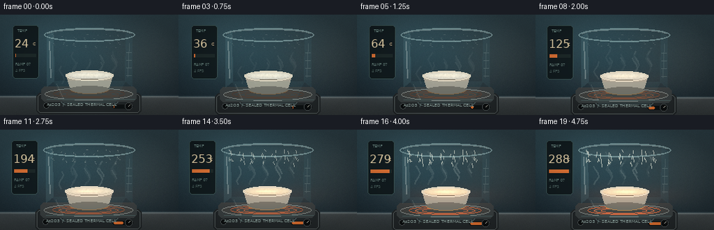
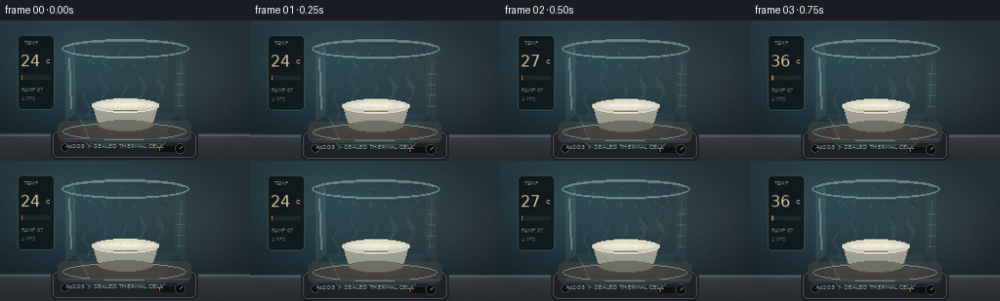
展开代码变化
--- 上一保存版本
+++ 本次保存版本
@@ -29,7 +29,7 @@
return
part = rgba[y0 - y:y1 - y, x0 - x:x1 - x]
a = part[:, :, 3:4]
- base[y0:y1, x0:x1] = base[y0:y1, x0:x1] * (1 - a) + part[:, :, :3] * a
+ base[y0:y1, x0:x1] = base[y0:y1, x0:x1] * (1 - a) + part[:, :, :3] * 255.0 * a
def ellipse_mask(size, box, feather=2):
@@ -252,7 +252,7 @@
# Tiny, crisp typography and temperature instrument.
composite(frame, draw_thermometer(t), 15, 13)
- img = Image.fromarray(np.clip(frame * 255, 0, 255).astype(np.uint8))
+ img = Image.fromarray(np.clip(frame, 0, 255).astype(np.uint8))
d = ImageDraw.Draw(img)
d.text((67, 125), "As2O3 / SEALED THERMAL CELL", font=font(6), fill=(142, 163, 158))
d.line((67, 121, 193, 121), fill=(74, 94, 94), width=1)
候选 04播放与检查图
点击播放 · 原生 RGB 像素
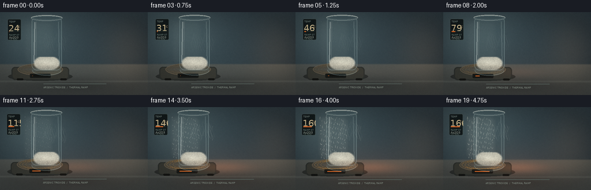
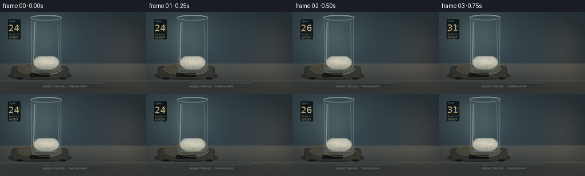
展开代码变化
--- 上一保存版本
+++ 本次保存版本
@@ -1,5 +1,6 @@
from pathlib import Path
+import cv2
import numpy as np
from PIL import Image, ImageDraw, ImageFilter, ImageFont
from scipy.ndimage import gaussian_filter
@@ -9,269 +10,267 @@
ROOT = Path(__file__).resolve().parent
W, H, N, FPS = 256, 144, 20, 4
-FONT = "/usr/share/fonts/truetype/dejavu/DejaVuSans.ttf"
+S = 2 # Supersampling for smoother glass and fine powder.
+CW, CH = W * S, H * S
+FONT_PATH = "/usr/share/fonts/truetype/dejavu/DejaVuSans.ttf"
+
+
+def smoothstep(t):
+ t = np.clip(t, 0.0, 1.0)
+ return t * t * (3.0 - 2.0 * t)
def font(size):
- return ImageFont.truetype(FONT, size)
-
-
-def ease(t):
- return t * t * (3.0 - 2.0 * t)
+ return ImageFont.truetype(FONT_PATH, size * S)
def composite(base, layer, x, y):
rgba = np.asarray(layer, dtype=np.float32) / 255.0
- h, w = rgba.shape[:2]
- x0, y0 = max(0, x), max(0, y)
- x1, y1 = min(base.shape[1], x + w), min(base.shape[0], y + h)
- if x0 >= x1 or y0 >= y1:
+ lh, lw = rgba.shape[:2]
+ x0, y0 = max(0, int(x)), max(0, int(y))
+ x1, y1 = min(base.shape[1], int(x) + lw), min(base.shape[0], int(y) + lh)
+ if x1 <= x0 or y1 <= y0:
return
- part = rgba[y0 - y:y1 - y, x0 - x:x1 - x]
- a = part[:, :, 3:4]
- base[y0:y1, x0:x1] = base[y0:y1, x0:x1] * (1 - a) + part[:, :, :3] * 255.0 * a
-
-
-def ellipse_mask(size, box, feather=2):
- mask = Image.new("L", size, 0)
- ImageDraw.Draw(mask).ellipse(box, fill=255)
- mask = mask.filter(ImageFilter.GaussianBlur(feather))
- return np.asarray(mask, dtype=np.float32) / 255.0
-
-
-def make_background():
- yy, xx = np.mgrid[0:H, 0:W].astype(np.float32)
- rng = np.random.default_rng(82)
-
- # Soft blue-gray lab wall and a lighter countertop.
+ part = rgba[y0 - int(y):y1 - int(y), x0 - int(x):x1 - int(x)]
+ alpha = part[:, :, 3:4]
+ base[y0:y1, x0:x1] = base[y0:y1, x0:x1] * (1 - alpha) + part[:, :, :3] * 255 * alpha
+
+
+def world_background():
+ yy, xx = np.mgrid[0:CH, 0:CW].astype(np.float32)
+ yy /= S
+ xx /= S
+ rng = np.random.default_rng(91)
+
+ # A warm-gray bench, cool lab wall, and shallow depth of field.
+ wall_y = 90.0
wall = np.stack(
(
- 29 + 13 * (1 - yy / 118),
- 43 + 18 * (1 - yy / 118),
- 51 + 18 * (1 - yy / 118),
+ 39 + 14 * np.exp(-((xx - 72) / 145) ** 2),
+ 51 + 17 * np.exp(-((xx - 72) / 145) ** 2),
+ 58 + 16 * np.exp(-((xx - 72) / 145) ** 2),
),
axis=2,
)
- base = wall.copy()
- bench_y = 117
- b = np.clip((yy - bench_y) / (H - bench_y), 0, 1)
bench = np.stack(
(
- 49 + 18 * (1 - b),
- 55 + 19 * (1 - b),
- 57 + 20 * (1 - b),
+ 61 + 17 * (1 - np.clip((yy - wall_y) / 60, 0, 1)),
+ 65 + 17 * (1 - np.clip((yy - wall_y) / 60, 0, 1)),
+ 64 + 15 * (1 - np.clip((yy - wall_y) / 60, 0, 1)),
),
axis=2,
)
- base[bench_y:] = bench[bench_y:]
-
- # Broad cool light and a subdued warm counter reflection.
- cool = np.exp(-(((xx - 50) / 82) ** 2 + ((yy - 27) / 58) ** 2))[:, :, None]
- warm = np.exp(-(((xx - 209) / 65) ** 2 + ((yy - 62) / 55) ** 2))[:, :, None]
- base += cool * np.array([10, 17, 18], dtype=np.float32)
- base += warm * np.array([13, 8, 4], dtype=np.float32)
- edge = np.exp(-((yy - bench_y) / 1.5) ** 2)[:, :, None]
- base += edge * np.array([38, 43, 43], dtype=np.float32)
-
- # Faint apparatus shadow on the bench.
- shadow = np.exp(-(((xx - 127) / 76) ** 2 + ((yy - 127) / 13) ** 2))
- base *= 1.0 - 0.26 * shadow[:, :, None]
- base += rng.normal(0, 1.1, (H, W, 1))
+ base = np.where((yy < wall_y)[:, :, None], wall, bench)
+
+ # Large softbox catchlight and warm rim light.
+ softbox = np.exp(-(((xx - 53) / 66) ** 2 + ((yy - 35) / 45) ** 2))
+ base += softbox[:, :, None] * np.array([20, 24, 23], dtype=np.float32)
+ rim = np.exp(-(((xx - 221) / 44) ** 2 + ((yy - 68) / 56) ** 2))
+ base += rim[:, :, None] * np.array([20, 12, 6], dtype=np.float32)
+
+ # Very subtle bench seams and sensor grain.
+ seam = np.exp(-((yy - 119.0) / 1.1) ** 2)
+ base += seam[:, :, None] * np.array([20, 21, 19], dtype=np.float32)
+ grain = rng.normal(0, 1.8, (CH, CW, 1)).astype(np.float32)
+ base += grain
+ base = gaussian_filter(base, sigma=(0.8 * S, 0.8 * S, 0))
return base
-def make_chamber():
- """Front-view quartz chamber with open top and a tapered lower neck."""
- size = (172, 117)
- glass = Image.new("RGBA", size, (0, 0, 0, 0))
- d = ImageDraw.Draw(glass)
- # Side walls.
- d.polygon([(25, 17), (34, 11), (35, 82), (25, 90)], fill=(122, 181, 190, 34))
- d.polygon([(138, 11), (147, 17), (147, 90), (137, 82)], fill=(66, 113, 126, 37))
- d.polygon([(35, 82), (137, 82), (123, 113), (49, 113)], fill=(89, 141, 149, 24))
- # Bottom silhouette.
- d.arc((45, 100, 127, 122), 5, 175, fill=(168, 208, 208, 76), width=2)
- d.line((49, 113, 123, 113), fill=(157, 202, 203, 62), width=1)
- # Lip.
- d.ellipse((21, 6, 151, 25), outline=(183, 220, 219, 125), width=2)
- d.arc((26, 8, 146, 21), 184, 355, fill=(221, 238, 232, 88), width=1)
- # Reflections.
- d.line((28, 25, 30, 77), fill=(216, 239, 236, 92), width=2)
- d.line((33, 31, 33, 69), fill=(209, 236, 233, 36), width=1)
- d.line((143, 28, 141, 76), fill=(179, 220, 222, 42), width=1)
- d.line((39, 86, 49, 108), fill=(207, 231, 227, 45), width=1)
- # Etched graduation ticks.
- for y in (41, 52, 63, 74):
- d.line((139, y, 146, y), fill=(178, 210, 207, 59), width=1)
- return glass
-
-
-def make_hotplate(t):
- heat = np.clip((t - 0.15) / 0.8, 0, 1)
- size = (154, 46)
- im = Image.new("RGBA", size, (0, 0, 0, 0))
- d = ImageDraw.Draw(im)
- d.rounded_rectangle((2, 12, 152, 42), radius=6, fill=(35, 40, 42, 255))
- d.rounded_rectangle((4, 14, 150, 40), radius=5, outline=(88, 96, 96, 255), width=1)
- d.rounded_rectangle((9, 3, 145, 24), radius=6, fill=(58, 64, 65, 255))
- d.ellipse((14, 5, 140, 22), fill=(66, 68, 66, 255), outline=(136, 142, 138, 255))
- ring = (int(82 + 148 * heat), int(61 + 48 * heat), int(49 + 16 * heat), 255)
- for inset in (7, 16, 26):
- d.ellipse((19 + inset, 7 + inset * 0.13, 135 - inset, 20 - inset * 0.11), outline=ring)
- d.rounded_rectangle((111, 29, 140, 34), radius=2, fill=(15, 19, 20, 255))
- d.rounded_rectangle((113, 30, 113 + int(25 * heat), 33), radius=1, fill=(224, 112, 48, 255))
- d.ellipse((12, 26, 20, 34), fill=(12, 15, 16, 255), outline=(73, 80, 81, 255))
- d.ellipse((129, 26, 139, 36), fill=(12, 15, 16, 255), outline=(73, 80, 81, 255))
- d.line((134, 31, 136, 29), fill=(189, 189, 177, 255), width=1)
- return im
-
-
-def make_crucible(t):
- heat = np.clip((t - 0.15) / 0.8, 0, 1)
- size = (88, 40)
- im = Image.new("RGBA", size, (0, 0, 0, 0))
- d = ImageDraw.Draw(im)
- # Exterior bowl and foot.
- d.polygon([(10, 10), (78, 10), (72, 29), (61, 35), (27, 35), (16, 29)], fill=(169, 165, 150, 255))
- d.ellipse((16, 27, 72, 37), fill=(117, 114, 104, 255))
- d.ellipse((10, 5, 78, 19), fill=(207, 201, 183, 255), outline=(238, 230, 207, 255), width=1)
- d.ellipse((14, 7, 74, 17), fill=(57, 55, 49, 255), outline=(116, 109, 93, 255))
- d.arc((12, 7, 76, 19), 184, 353, fill=(240, 231, 208, 255), width=1)
- # Warm reflected light along the bottom.
- warm = (int(126 + 70 * heat), int(96 + 45 * heat), int(65 + 14 * heat), 255)
- d.arc((16, 25, 72, 38), 10, 171, fill=warm, width=1)
- return im
-
-
-def material_layer(t):
- """Fine white powder contracts, melts, and leaves a translucent residue."""
- yy, xx = np.mgrid[0:40, 0:88].astype(np.float32)
- mask = ellipse_mask((88, 40), (13, 7, 75, 17), 0.7)
- mask *= (yy >= 8) & (yy <= 16)
- heat = ease(np.clip((t - 0.25) / 0.65, 0, 1))
-
- rng = np.random.default_rng(57)
- grain = gaussian_filter(rng.normal(0, 1, (40, 88)), 0.65)
- base = np.array([217, 217, 205], dtype=np.float32)
- hot = np.array([245, 219, 167], dtype=np.float32)
- col = base * (1 - heat * 0.55) + hot * (heat * 0.55)
- col = col[None, None, :] + grain[:, :, None] * (8 - 3 * heat)
-
- # A low mound, shifting toward the hotter left side.
- mound = np.exp(-(((xx - (44 + 6 * heat)) / (31 - 7 * heat)) ** 2 + ((yy - 11) / (3.0 + heat)) ** 2))
- col += mound[:, :, None] * np.array([27, 23, 14], dtype=np.float32) * (1 - 0.35 * heat)
- # Melt pool sheen.
- sheen = np.exp(-(((xx - (31 + 14 * t)) / 12) ** 2 + ((yy - 12) / 1.3) ** 2))
- col += sheen[:, :, None] * np.array([52, 36, 18], dtype=np.float32) * heat
- rgba = np.zeros((40, 88, 4), dtype=np.uint8)
- rgba[:, :, :3] = np.clip(col, 0, 255).astype(np.uint8)
- rgba[:, :, 3] = np.clip(mask * 255, 0, 255).astype(np.uint8)
- return Image.fromarray(rgba, "RGBA")
-
-
-def sublimation_layer(t):
- """Wispy vapor that travels up from the crucible into the chamber."""
- size = (126, 86)
- im = Image.new("RGBA", size, (0, 0, 0, 0))
- d = ImageDraw.Draw(im)
- amount = np.clip((t - 0.28) / 0.5, 0, 1)
- for i in range(13):
- x = 25 + (i * 19) % 77
- phase = t * 5.0 + i * 1.4
- ybase = 75 - (i % 5) * 5 - 22 * amount
- pts = []
- for j in range(6):
- pts.append((x + 3.5 * np.sin(j * 1.2 + phase), ybase - j * 5))
- alpha = int((20 + 26 * amount) * (0.5 + 0.5 * np.sin(i * 2.4 + 0.5)))
- d.line(pts, fill=(225, 236, 226, max(10, alpha)), width=2, joint="curve")
- return im
-
-
-def crystal_layer(t):
- """Cool upper glass accumulates needle-like white sublimate."""
- rng = np.random.default_rng(121)
- size = (150, 58)
- im = Image.new("RGBA", size, (0, 0, 0, 0))
- d = ImageDraw.Draw(im)
- amount = ease(np.clip((t - 0.42) / 0.5, 0, 1))
- for i in range(42):
- x = 20 + (i * 31) % 108 + rng.uniform(-1.2, 1.2)
- y = 10 + (i * 13) % 20
- h = (2 + rng.uniform(0, 7)) * amount
- lean = rng.uniform(-1.6, 1.6)
- alpha = int(35 + 155 * amount)
- d.line((x, y, x + lean, y + h), fill=(236, 239, 223, alpha), width=1)
- if i % 7 == 0 and amount > 0.3:
- d.line((x, y + h * 0.55, x + lean + 2, y + h * 0.75), fill=(244, 242, 224, alpha), width=1)
- # Condensation haze along the cool top edge.
+def draw_mantle(t):
+ """A woven heating mantle, wrapped around the lower quartz tube."""
+ heat = smoothstep((t - 0.12) / 0.82)
+ size = (230, 94)
+ im = Image.new("RGBA", size, (0, 0, 0, 0))
+ d = ImageDraw.Draw(im)
+ # Shadow and housing.
+ d.ellipse((5, 63, 225, 92), fill=(17, 19, 18, 125))
+ d.rounded_rectangle((17, 45, 213, 89), radius=12, fill=(45, 48, 45, 255))
+ d.rounded_rectangle((21, 48, 209, 85), radius=10, fill=(56, 57, 51, 255))
+ # Woven ceramic mantle.
+ d.ellipse((38, 33, 192, 74), fill=(73, 68, 56, 255), outline=(107, 96, 78, 255), width=2)
+ for inset in (8, 18, 29):
+ d.ellipse((38 + inset, 36 + inset * 0.12, 192 - inset, 71 - inset * 0.14),
+ outline=(88 + int(55 * heat), 77 + int(30 * heat), 59, 255), width=2)
+ # Fine radial weave.
+ for i in range(38):
+ a = i * np.pi * 2 / 38
+ x = 115 + 74 * np.cos(a)
+ y = 53 + 18 * np.sin(a)
+ d.line((115, 53, x, y), fill=(91, 82, 66, 42), width=1)
+ # Front display and feet.
+ d.rounded_rectangle((80, 68, 150, 82), radius=3, fill=(25, 27, 25, 255))
+ d.rounded_rectangle((87, 73, 143, 77), radius=2, fill=(18, 20, 18, 255))
+ d.rounded_rectangle((89, 74, 89 + int(50 * heat), 76), radius=1,
+ fill=(223, 111, 45, 255))
+ for x in (35, 183):
+ d.rounded_rectangle((x, 84, x + 22, 90), radius=4, fill=(21, 22, 20, 255))
+ return im
+
+
+def draw_tube():
+ """Clear fused-quartz tube with a rounded closed base."""
+ size = (186, 222)
+ im = Image.new("RGBA", size, (0, 0, 0, 0))
+ d = ImageDraw.Draw(im)
+ # Cylinder body, lightly cool and transparent.
+ d.rounded_rectangle((43, 15, 143, 194), radius=17, fill=(125, 165, 170, 25))
+ d.ellipse((43, 178, 143, 213), fill=(112, 153, 159, 30))
+ d.rectangle((43, 31, 143, 190), fill=(109, 151, 156, 16))
+ # Silhouette.
+ d.rounded_rectangle((42, 13, 144, 196), radius=18, outline=(177, 204, 201, 92), width=2)
+ d.arc((43, 177, 143, 214), 2, 178, fill=(171, 202, 201, 92), width=2)
+ # Lip and inner rim.
+ d.ellipse((39, 8, 147, 27), fill=(84, 120, 126, 32), outline=(214, 229, 220, 115), width=2)
+ d.ellipse((46, 12, 140, 23), outline=(165, 195, 193, 82), width=1)
+ # Long cool reflections.
+ d.line((52, 32, 49, 167), fill=(222, 235, 229, 102), width=4)
+ d.line((57, 31, 56, 157), fill=(220, 233, 227, 42), width=2)
+ d.line((133, 31, 136, 172), fill=(180, 205, 202, 58), width=3)
+ d.line((139, 45, 140, 149), fill=(132, 170, 172, 38), width=1)
+ # Fine bright lip.
+ d.arc((40, 9, 146, 26), 184, 356, fill=(240, 245, 232, 190), width=2)
+ return im
+
+
+def powder_texture(t):
+ """White arsenic trioxide particles in the closed tube."""
+ heat = smoothstep((t - 0.25) / 0.68)
+ yy, xx = np.mgrid[0:222, 0:186].astype(np.float32)
+ # Powder occupies the curved bottom of the tube.
+ e = ((xx - 93) / 47.0) ** 2 + ((yy - 172) / 28.0) ** 2
+ mask = np.clip((1 - e) * 4, 0, 1)
+ mask *= (yy > 150) & (yy < 196)
+ mask = gaussian_filter(mask, 1.0)
+
+ rng = np.random.default_rng(23)
+ fine = rng.normal(0, 1, (222, 186))
+ fine = gaussian_filter(fine, 0.65)
+ clump = gaussian_filter(rng.normal(0, 1, (222, 186)), 4.0)
+ mound = np.exp(-(((xx - 92) / 38) ** 2 + ((yy - 169) / 11) ** 2))
+ shade = 197 + 29 * mound + fine * 17 + clump * 12
+ shade -= np.clip((yy - 177) / 17, 0, 1) * 36
+ shade += heat * (15 * np.exp(-(((xx - (82 + 10 * t)) / 15) ** 2 + ((yy - 173) / 7) ** 2)))
+ rgb = np.stack((shade * 1.03, shade, shade * 0.91), axis=2)
+ rgba = np.zeros((222, 186, 4), dtype=np.uint8)
+ rgba[:, :, :3] = np.clip(rgb, 0, 255).astype(np.uint8)
+ rgba[:, :, 3] = np.clip(mask * 240, 0, 255).astype(np.uint8)
+ return Image.fromarray(rgba)
+
+
+def sublimate_glass(t):
+ """Microcrystalline sublimate condenses on the cool upper wall."""
+ amount = smoothstep((t - 0.38) / 0.55)
+ rng = np.random.default_rng(55)
+ size = (100, 156)
+ im = Image.new("RGBA", size, (0, 0, 0, 0))
+ d = ImageDraw.Draw(im)
haze = Image.new("RGBA", size, (0, 0, 0, 0))
hd = ImageDraw.Draw(haze)
- hd.rounded_rectangle((17, 5, 132, 27), radius=10, fill=(218, 228, 213, int(17 * amount)))
- haze = haze.filter(ImageFilter.GaussianBlur(5))
+ hd.rounded_rectangle((2, 2, 98, 145), radius=15, fill=(225, 224, 209, int(8 + 17 * amount)))
+ haze = haze.filter(ImageFilter.GaussianBlur(6))
im = Image.alpha_composite(im, haze)
- return im
-
-
-def draw_thermometer(t):
- temp = 24 + int(264 * ease(np.clip((t - 0.04) / 0.9, 0, 1)))
- size = (44, 82)
- im = Image.new("RGBA", size, (0, 0, 0, 0))
- d = ImageDraw.Draw(im)
- d.rounded_rectangle((3, 2, 40, 78), radius=5, fill=(17, 26, 29, 235), outline=(59, 84, 84, 255))
- d.text((10, 7), "TEMP", font=font(5), fill=(116, 148, 142))
- d.text((6, 19), f"{temp}", font=font(16), fill=(242, 221, 178))
- d.text((32, 25), "C", font=font(6), fill=(209, 186, 147))
- d.rectangle((7, 43, 36, 47), fill=(30, 42, 42))
- frac = np.clip((temp - 20) / 280, 0, 1)
- d.rectangle((7, 43, 7 + int(29 * frac), 47), fill=(225, 116, 54))
- d.text((7, 55), "RAMP 07", font=font(5), fill=(100, 127, 122))
- d.text((7, 64), "4 FPS", font=font(5), fill=(78, 101, 98))
- return im
-
-
-def render(t):
- frame = make_background()
- yy, xx = np.mgrid[0:H, 0:W].astype(np.float32)
- heat = np.clip((t - 0.12) / 0.82, 0, 1)
-
- # A cool glow behind the apparatus anchors the silhouette.
- halo = np.exp(-(((xx - 128) / 82) ** 2 + ((yy - 63) / 69) ** 2))
- frame += halo[:, :, None] * np.array([5, 12, 13], dtype=np.float32)
-
- # Apparatus.
- composite(frame, make_hotplate(t), 50, 100)
- composite(frame, make_crucible(t), 84, 75)
- composite(frame, material_layer(t), 84, 75)
- composite(frame, sublimation_layer(t), 64, 23)
- composite(frame, crystal_layer(t), 54, 18)
- composite(frame, make_chamber(), 42, 13)
-
- # Warm light wraps the chamber from below as the plate heats.
- warm = np.exp(-(((xx - 128) / 65) ** 2 + ((yy - 93) / 14) ** 2))
- frame += warm[:, :, None] * np.array([29, 9, 2], dtype=np.float32) * heat
-
- # Tiny, crisp typography and temperature instrument.
- composite(frame, draw_thermometer(t), 15, 13)
+ d = ImageDraw.Draw(im)
+ for i in range(115):
+ x = 5 + (i * 37) % 90 + rng.normal(0, 0.8)
+ y = 3 + (i * 53) % 140
+ length = (2 + rng.uniform(0, 7)) * amount
+ a = int(20 + 125 * amount)
+ d.line((x, y, x + rng.uniform(-1.7, 1.7), y + length),
+ fill=(236, 235, 219, a), width=1)
+ if i % 11 == 0:
+ d.line((x, y + length * 0.5, x + rng.choice([-2, 2]), y + length * 0.7),
+ fill=(244, 241, 223, a), width=1)
+ return im
+
+
+def vapor_layer(t):
+ size = (122, 135)
+ im = Image.new("RGBA", size, (0, 0, 0, 0))
+ d = ImageDraw.Draw(im)
+ amount = smoothstep((t - 0.31) / 0.48)
+ for i in range(17):
+ x0 = 22 + (i * 29) % 79
+ phase = i * 1.7 + t * 6.2
+ y0 = 111 - 22 * amount - (i % 4) * 5
+ pts = [(x0 + 3.2 * np.sin(j * 1.15 + phase), y0 - 8 * j) for j in range(7)]
+ alpha = int((14 + 22 * amount) * (0.4 + 0.6 * np.sin(i * 2.2 + 0.8) ** 2))
+ d.line(pts, fill=(229, 236, 225, max(7, alpha)), width=2, joint="curve")
+ return im.filter(ImageFilter.GaussianBlur(0.55))
+
+
+def make_thermometer(t):
+ # The ramp stops below As2O3's sublimation point (~193 C at 1 atm).
+ temp = int(24 + 142 * smoothstep((t - 0.03) / 0.92))
+ size = (49, 77)
+ im = Image.new("RGBA", size, (0, 0, 0, 0))
+ d = ImageDraw.Draw(im)
+ d.rounded_rectangle((2, 2, 47, 73), radius=5, fill=(18, 25, 26, 242), outline=(73, 88, 84, 255))
+ d.text((7, 6), "TEMP", font=font(4), fill=(139, 158, 150))
+ d.text((5, 16), f"{temp}", font=font(15), fill=(242, 218, 169))
+ d.text((38, 22), "C", font=font(5), fill=(206, 182, 139))
+ d.line((7, 39, 42, 39), fill=(63, 80, 77), width=1)
+ d.rectangle((7, 43, 42, 46), fill=(30, 40, 39))
+ frac = (temp - 20) / 170
+ d.rectangle((7, 43, 7 + int(35 * frac), 46), fill=(222, 107, 43))
+ d.text((7, 51), "RAMP 07", font=font(4), fill=(119, 142, 134))
+ d.text((7, 58), "As2O3", font=font(5), fill=(174, 183, 169))
+ d.text((7, 66), "25 MIN", font=font(4), fill=(89, 109, 103))
+ return im
+
+
+def assemble(t):
+ frame = world_background()
+ yy, xx = np.mgrid[0:CH, 0:CW].astype(np.float32)
+ xx /= S
+ yy /= S
+ heat = smoothstep((t - 0.12) / 0.82)
+
+ # The scene's warm light is motivated by the mantle.
+ spill = np.exp(-(((xx - 128) / 72) ** 2 + ((yy - 105) / 38) ** 2))
+ frame += spill[:, :, None] * np.array([20, 7, 2], dtype=np.float32) * heat
+ # Cast shadow on the bench.
+ shadow = np.exp(-(((xx - 128) / 79) ** 2 + ((yy - 126) / 13) ** 2))
+ frame *= 1 - 0.22 * shadow[:, :, None]
+
+ # Back-to-front apparatus assembly.
+ composite(frame, draw_mantle(t), 13 * S, 72 * S)
+ composite(frame, powder_texture(t), 35 * S, 2 * S)
+ composite(frame, sublimate_glass(t), 43 * S, 16 * S)
+ composite(frame, vapor_layer(t), 67 * S, 13 * S)
+ composite(frame, draw_tube(), 35 * S, 2 * S)
+
+ # Warm lower glass rim and a cool top highlight.
+ lower = np.exp(-(((xx - 128) / 51) ** 2 + ((yy - 103) / 9) ** 2))
+ frame += lower[:, :, None] * np.array([40, 15, 5], dtype=np.float32) * heat
+
+ composite(frame, make_thermometer(t), 14 * S, 12 * S)
img = Image.fromarray(np.clip(frame, 0, 255).astype(np.uint8))
d = ImageDraw.Draw(img)
- d.text((67, 125), "As2O3 / SEALED THERMAL CELL", font=font(6), fill=(142, 163, 158))
- d.line((67, 121, 193, 121), fill=(74, 94, 94), width=1)
-
- # Restrained optical drift.
- zoom = 1.0 + 0.018 * t
- cw, ch = int(W / zoom), int(H / zoom)
- cx = (W - cw) // 2 + int(round(1.5 * np.sin(t * 1.2)))
- cy = (H - ch) // 2 + int(round(-1.2 * t))
+ d.text((76 * S, 127 * S), "ARSENIC TRIOXIDE / THERMAL RAMP", font=font(4),
+ fill=(145, 157, 146))
+ d.line((76 * S, 123 * S, 183 * S, 123 * S), fill=(94, 107, 101), width=1 * S)
+ # Lens drift and slight handheld breathing.
+ zoom = 1.015 + 0.017 * t
+ cw, ch = int(CW / zoom), int(CH / zoom)
+ cx = (CW - cw) // 2 + int(1.4 * S * np.sin(t * 1.1))
+ cy = (CH - ch) // 2 + int(-0.8 * S * t)
img = img.crop((cx, cy, cx + cw, cy + ch)).resize((W, H), Image.Resampling.LANCZOS)
arr = np.asarray(img).astype(np.float32)
- vig = 1 - 0.17 * (((xx - W / 2) / (W / 2)) ** 2 + ((yy - H / 2) / (H / 2)) ** 2)
- arr *= np.clip(vig, 0.78, 1)[:, :, None]
+ # Optical vignette, restrained bloom, and fine sensor texture.
+ vy, vx = np.mgrid[0:H, 0:W].astype(np.float32)
+ vignette = 1 - 0.16 * (((vx - W / 2) / (W / 2)) ** 2 + ((vy - H / 2) / (H / 2)) ** 2)
+ arr *= np.clip(vignette, 0.8, 1.0)[:, :, None]
+ bloom = gaussian_filter(arr, sigma=(1.0, 1.0, 0))
+ arr = arr * 0.965 + bloom * 0.035
+ rng = np.random.default_rng(100 + int(t * 1000))
+ arr += rng.normal(0, 0.8, (H, W, 1))
return np.clip(arr, 0, 255).astype(np.uint8)
def main():
- frames = np.stack([render(i / (N - 1)) for i in range(N)])
+ frames = np.stack([assemble(i / (N - 1)) for i in range(N)])
artifact_io.save(frames, ROOT)
print(f"saved {len(frames)} frames to {ROOT}")
可观测工具轨迹
实际执行的命令与返回图片。
命令 1exit 0
/bin/bash -c "pwd && rg --files -g '"'!**/.git/**'"' | sed -n '1,200p'"
命令 2exit 0
/bin/bash -c "sed -n '1,240p' GENERATION_RULES.md"
命令 3exit 0
/bin/bash -c "cat task_spec.json && printf '\\n--- PROMPT ---\\n' && cat prompt.txt"
命令 4exit 0
/bin/bash -c "find . -maxdepth 2 -type f -printf '%p %s bytes\\n' | sort | sed -n '1,240p'"
命令 5exit 0
/bin/bash -c "sed -n '1,260p' artifact_io.py"
命令 6exit 0
/bin/bash -c "python - <<'PY'
import importlib.util
for m in ['numpy','PIL','scipy','cv2','imageio','matplotlib']:
print(m, bool(importlib.util.find_spec(m)))
PY"命令 7exit 0
/bin/bash -c "fc-match 'DejaVu Sans' | head -1"
命令 8exit 0
/bin/bash -c "python - <<'PY' import numpy, PIL, scipy print(numpy.__version__, PIL.__version__, scipy.__version__) PY"
命令 9exit 1
/bin/bash -c 'python generate.py'
命令 10exit 0
/bin/bash -c 'python generate.py'
命令 11exit 0
/bin/bash -c 'mkdir -p candidates/v1 && cp inspection.png transition_check.png candidates/v1/ && cp -r frames candidates/v1/frames && cp pixels.npz candidates/v1/'
命令 12exit 0
/bin/bash -c 'python generate.py'
命令 13exit 0
/bin/bash -c 'mkdir -p candidates/v2_white_fix && cp inspection.png transition_check.png candidates/v2_white_fix/ && cp -r frames candidates/v2_white_fix/frames && cp pixels.npz candidates/v2_white_fix/'
命令 14exit 0
/bin/bash -c 'python generate.py'
命令 15exit 0
/bin/bash -c 'mkdir -p candidates/v2_flat && cp inspection.png transition_check.png candidates/v2_flat/ && cp -r frames candidates/v2_flat/frames && cp pixels.npz candidates/v2_flat/'
命令 16exit 0
/bin/bash -c 'python generate.py'
视觉工具实际返回图片 1

视觉工具实际返回图片 2

视觉工具实际返回图片 3
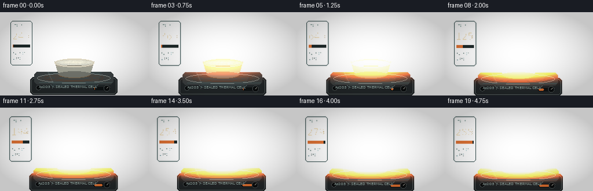
视觉工具实际返回图片 4

视觉工具实际返回图片 5
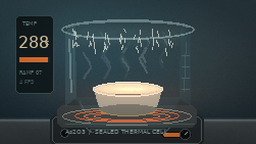
视觉工具实际返回图片 6
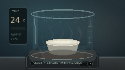
视觉工具实际返回图片 7
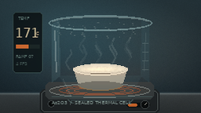
视觉工具实际返回图片 8

视觉工具实际返回图片 9
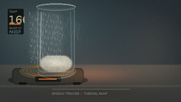
保存候选 4 份；完成命令 16 次；可验证图片返回 9 张。原始 API 响应与完整日志保留在本地。